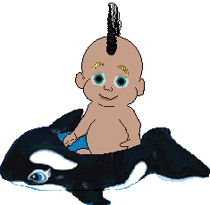
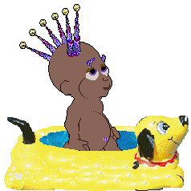

.
Fish, playscenes etc for your water-loving Petz and Babyz
~~~~~~~~~~~~~~~~~~~~~~~~~~~~~
For water-lovers out there, I thought it would be a good idea to make it easy for you to find all the aquatic items that are on this site, so here they are with a separate section of their own :-)
Frogs and tadpoles for the Petz games 3, 4 and 5
Fishies for the Petz games 11, 3, 4 and 5
Ducks for the Petz games 3, 4 and 5
Liberated goldfish
for Petz 11 , Petz 4, and Petz 5!
Petz 4 beach as seen by fish
Petz II -- beach as seen by fish

Babyz Fishies
Go here for Merbabyz
Anne of Gold Bell Babyz has made some great little merbabyz for you; pop along to her
site to get them!
Get Wardah Ahmar's custom-made Schools
of fish for petz here
Wardah Ahmar's Seascape for Babyz
Minibyte's Seascape for Petz 3, 4, 5
Miranda made
a beautiful undersea scene for Petz 4
Judy's fantastic fish tank for
Petz 4 and 5
Judy of the Pine Cone Cattery made a terrific tank scene for the fishes, so go and visit
her site to get it!
Pools for your Babyz

The KidPond
This pool shows up in the Nursery shelves. I use it in my "Secret
Wood"
It works like the bath, but does not overwrite it. The babyz need not get clothed inbubbles -- either remove
the bubble clothes from your game's clothes directory, or download my exotic "bikini-bottom" replacements :-)

The KidPool
This pool shows up in the Playroom and Attic closets.
It works like the Bath, but does not overwrite it and the babyz need not get clothed in bubbles.